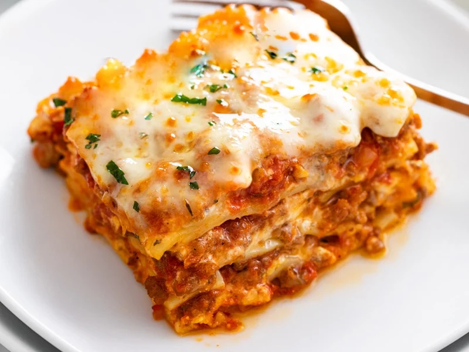

Lasagna

Lasagna is a classic Italian dish made with layers of pasta, meat sauce, and cheese. It's a hearty and comforting meal that's perfect for feeding a crowd or for leftovers throughout the week.
Ingredients
- 1 lb. ground beef
- jar (24 oz.) pasta sauce
- can (14.5 oz.) diced tomatoes
- 2 cloves garlic, minced
- 1 tsp. dried basil
- 1 tsp. dried oregano
- Salt and pepper, to taste
- 9 lasagna noodles
- 1 container (15 oz.) ricotta cheese
- 1 egg
- 2 cups shredded mozzarella cheese
- 1/2 cup grated Parmesan cheese
Steps
- Preheat the oven to 375°F (190°C).
- In a large skillet, cook the ground beef over medium heat until browned, about 8-10 minutes. Drain any excess fat.
- Add the pasta sauce, diced tomatoes, garlic, basil, oregano, salt, and pepper to the skillet with the ground beef. Stir to combine and bring to a simmer. Reduce the heat to low and let the sauce cook for 10-15 minutes.
- While the sauce is cooking, bring a large pot of salted water to a boil. Cook the lasagna noodles according to the package instructions. Drain and rinse with cold water.
- In a small bowl, combine the ricotta cheese and egg. Stir well.
- In a 9x13 inch baking dish, spread a thin layer of the meat sauce on the bottom. Place three of the cooked lasagna noodles on top. Spread half of the ricotta cheese mixture on the noodles. Sprinkle with 1 cup of shredded mozzarella cheese and 1/4 cup of grated Parmesan cheese.
- Repeat the layering process: meat sauce, noodles, ricotta cheese mixture, mozzarella cheese, and Parmesan cheese. Top with a final layer of noodles, meat sauce, and remaining mozzarella and Parmesan cheeses.
- Cover the baking dish with aluminum foil and bake in the preheated oven for 25 minutes. Remove the foil and bake for an additional 25 minutes, or until the cheese is melted and bubbly and the lasagna is heated through.
- Let the lasagna cool for 5-10 minutes before slicing and serving. Enjoy!
Return to main page